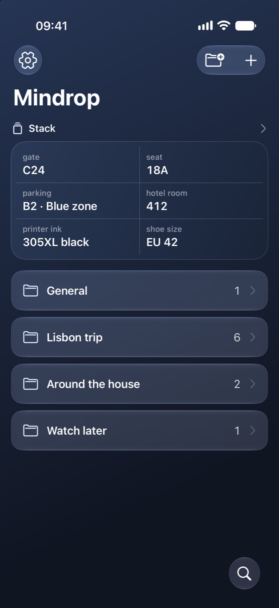

Remember less.
Find it faster.
Your departure gate. A film someone recommended. The little details you’ll need again.
Save a detail in Mindrop with a keyword you’ll remember. Find it right in Spotlight when you need it.
Illustrative Spotlight demo
Stack
Today’s details,
at a glance.
You’re walking through the terminal. Keep your gate and seat in Stack, then glance at your Home Screen, Lock Screen, or Apple Watch to see where you’re headed.

Pick the memories you want at the top and reorder them as your day changes. Sensitive values stay off widgets.
Capture
Save it while
it’s on your mind.
Halfway through a video, someone recommends Arrival. Pull down in Mindrop to open a new memory and save it under film recommendation. When you want something to watch, that’s all you need to type in Spotlight.
From another app, use the share sheet to save text, a link, or text from a screenshot. You can also scan a QR code or capture with Siri, Shortcuts, Control Center, or Apple Watch.
Folders
Keep related
details together.
Put your flight details, hotel address, and ticket links in a travel folder. Browse by category, search within the folder, or select several memories to move them together.
You can pull down inside a folder to save directly into it. When plans change, set a memory to expire or recover something you deleted from Recently Deleted.
Memory details
Find it.
Put it to use.
It’s time to clean the coffee machine. Search for coffee machine care and open the steps you saved when the manual was handy.
When a guest asks for Wi-Fi, open the saved network and show its QR code. You can also tap a value to copy it or open a saved link in your browser.
A little less
to keep in your head.
Your details stay in your hands.
Mindrop works offline without an account. Optional iCloud sync keeps memories available on supported devices. Mark a memory Sensitive to hide its value in Spotlight and unlock it in Mindrop with device authentication.
Read the Privacy Policy